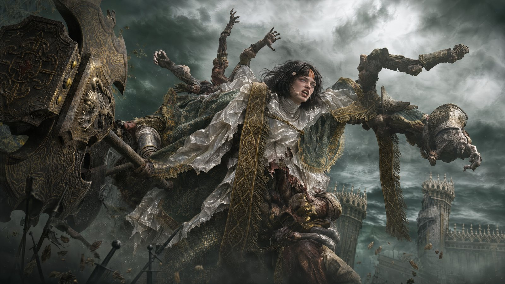
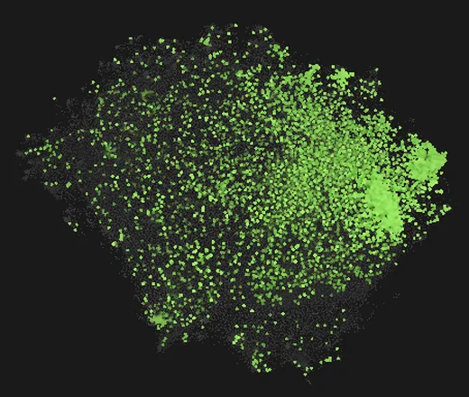
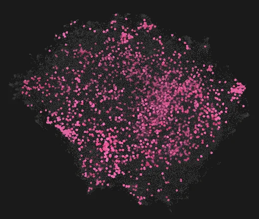

Grafting Neural Primitives Across Models
Can a smaller Qwen model use a larger model’s arithmetic neurons? We replaced Qwen3.5-4B’s disabled calculation neurons with neurons from Qwen3.5-9B. The 4B then solved 82.4% of GSM8K word problems, reaching 92% of the intact 4B’s score and 87% of the 9B donor’s. Shuffling the same graft’s weights cut accuracy to 37.6%.
We took neurons that activate during arithmetic in a larger Qwen model (the donor) and connected them to a smaller one (the host). We tried two changes. First we disabled the host’s own calculation neurons and replaced them with the donor’s. Then we left the host intact and added donor neurons alongside it. To test whether the donor’s learned weights mattered, we repeated selected grafts with those weights shuffled.
In both replacement experiments, learned weights recovered more word-problem accuracy than shuffled weights. Adding the 4B neurons to the intact 2B brought its exact arithmetic close to the 4B donor’s. When we added a combination of 27B neurons and attention heads to the 0.8B, the gain was almost the same with learned and shuffled weights.
Disabling 6,857 calculation neurons in Qwen3.5-4B
Which neurons should we move? The Encyclopedia of LLM homologies [1] maps the neurons in a model’s feed-forward layers (MLPs) by how often they activate together. One group activates at equals signs and as the model writes intermediate quantities. We found corresponding groups in the Qwen models [2], including 3,948 neurons in Qwen3.5-2B, 6,857 in the 4B, 8,713 in the 9B and 22,025 in Qwen3.8-27B.
We disabled the 6,857 calculation neurons in the 4B, 2.3% of its MLP neurons, by holding each at its mean activation. On GSM8K math word problems [3], accuracy fell from 89.6% to 4.8% (5% of the intact 4B’s score). On 200 exact-arithmetic problems, it fell from 52.0% to 0.5% (1% of baseline). On HellaSwag [4], which asks the model to choose a plausible continuation, accuracy went from 72.6% to 72.2% (99% of baseline).
The exact-arithmetic test gives five worked examples and covers sums and differences, multistep expressions, multiplication, exact fractions and greatest common divisors. Throughout the paper, baseline means the intact host’s accuracy on the same test in the same experiment. A score of 100% of donor means the grafted host answered as many questions correctly as the intact donor.
How donor neurons read from and write to a frozen host
We match each donor layer to a host layer at the same relative depth. A read map converts the host’s running representation, xH, to the donor’s width. A write map converts the donor’s output back. For a graft with its own donor stream, sD, the layer update takes the following form.
Δ = fD(u; α, τ), sD ← sD + Δ
xH ← xH + β (B0 + UBVBT) Δ
- Read. We fit the initial map A0 by ridge regression on paired host and donor activations from the same text. A low-rank correction UAVAT lets the read map adapt when training permits it.
- Run the donor units. The frozen function fD applies the selected donor neurons or attention heads. For MLP neurons, a trained gain α and threshold τ modulate deviations from each neuron’s calibration mean. The separate stream lets successive donor layers use earlier donor outputs directly.
- Write to the host. B0 is the fitted return map and UBVBT its learned correction. In the addition experiments the output gate β starts at zero, so the host initially makes exactly its original predictions.
- Train the interface. For 9B-to-4B replacement we trained the grafted model to reproduce the intact 4B’s next-token predictions on calculation and general text. For the later 4B-to-2B and 27B-to-0.8B grafts we gave equal weight to matching the donor on math and the intact host on general text. We measure the difference between predicted token distributions by KL divergence. Lower values mean closer predictions.
For a shuffled control we permute the donor’s weights before training the interface. The experiments used two kinds of shuffle. In the 9B-to-4B experiment every entry of each donor MLP weight matrix moved to a random position in that matrix, which keeps only the distribution of weight values. In the 4B-to-2B and 27B-to-0.8B experiments we permuted whole rows and whole columns of each selected matrix, with a separate permutation for each matrix, and attention-head weights also received random sign flips. That shuffle keeps each neuron’s weight norm, the angles between neurons’ weight vectors and each matrix’s singular values. It changes which input coordinates a neuron reads and which of its input, gate and output vectors belong together. For a separate training control on each intact host, we fit a low-rank adapter (LoRA [5]) to the host itself, using the same training data and objective.
Table 1. Donor and host for each intervention. Width is the number of coordinates in each model’s residual stream. Percentages in the parameter column are relative to the host’s parameter count. Table 2 gives counts for individual 27B grafts.
| Donor and host | Mode | Width | Grafted | Trained parameters | Training steps |
|---|---|---|---|---|---|
| Qwen3.5-9B into 4B | replace | 4,096 into 2,560 | 8,713 neurons for 6,857 | 445,490 (0.011%) with fixed read map 873,522 (0.021%) with both maps trained | 450 |
| Qwen3.5-4B into 2B | replace | 2,560 into 2,048 | 6,857 neurons for 3,948 Head variant also swaps 32 for 18 | 2,913,714 (0.15%) 2,962,898 (0.16%) with heads | 1,500 |
| Qwen3.5-4B into 2B | add | 2,560 into 2,048 | 6,857 neurons | 2,700,722 (0.14%) | 1,500 |
| Qwen3.8-27B into Qwen3.5-0.8B | add | 5,120 into 1,024 | Selected neurons, attention heads or both (Table 2) | 1.97M to 6.49M (0.26% to 0.86%) | 1,600 |
Replacing Qwen3.5-4B’s calculation neurons with neurons from Qwen3.5-9B
The 9B and 4B share a pretraining lineage and both have 32 layers. Neurons with similar activation patterns occur at corresponding depths [1]. We replaced the 4B’s 6,857 disabled calculation neurons with the 9B’s 8,713 calculation neurons. Just fitting the connecting maps brought GSM8K accuracy from 4.8% to 53.6% (60% of the intact 4B, 57% of the 9B).
Keeping the read map fixed and training 445,490 interface parameters gave the highest GSM8K score among the 9B-to-4B grafts, 84.0%. That is 94% of the intact 4B’s 89.6% and 89% of the 9B donor’s 94.4%. On exact arithmetic this graft scored 41.0% (79% of the 4B, 69% of the 9B).
The shuffled control belongs to a separate version that trained both read and write maps. With 873,522 trained parameters in each version, learned 9B weights gave 82.4% GSM8K accuracy (92% of the 4B, 87% of the 9B). Shuffled calculation weights gave 37.6% (42% of the 4B, 40% of the 9B). The learned version solved 117 problems the shuffled version missed and missed 5 that it solved (paired McNemar p = 8.1 × 10−29 [6]). Substituting the same number of prose neurons from the 9B, with both maps trained, gave 33.6% (38% of the 4B, 36% of the 9B). Neuron surgery [7] reports the other replacement variants.
GSM8K, 250 problems
Exact arithmetic, 200 problems
Replacing Qwen3.5-2B’s calculation neurons with neurons from Qwen3.5-4B
The 2B was trained separately from the 4B and has 24 layers to the 4B’s 32. Disabling the 2B’s 3,948 calculation neurons cut GSM8K accuracy from 70.0% to 1.0%. Replacing them with the 4B’s 6,857 calculation neurons brought accuracy back to 47.6% (68% of the intact 2B, 54% of the 4B donor).
An earlier replacement passed each 4B layer’s output back through the 2B. The revised interface kept a separate stream for the 4B neurons, fitted new maps and trained separate adapters for each layer. Exact-arithmetic accuracy doubled from 12.5% to 25.0% (28% to 57% of the intact 2B’s 44.0%, 23% to 47% of the 4B donor’s 53.5% in the later evaluation). On the same 200 problems the revised version gained 30 answers and lost 5 (p = 2.2 × 10−5). These changes were tested together.
A second replacement also disabled 18 of the 2B’s math-selective attention and Gated DeltaNet heads and inserted 32 corresponding heads from the 4B. This neurons-and-heads graft had the shuffled control. Its GSM8K accuracy was 43.6% with learned weights (62% of the 2B, 49% of the 4B) and 14.0% with shuffled weights (20% of the 2B, 16% of the 4B, p = 4.2 × 10−33).
Replacing heads along with neurons brought math predictions closer to the donor (KL 0.0335 to 0.0217) and general-text predictions farther from the host (0.0388 to 0.0670). Compared with replacing neurons alone, the change in GSM8K accuracy had p = 0.10. The 2B has just eight query heads per full-attention layer. Disabling its selected heads before grafting more than doubled general-text KL, from 0.092 to 0.227. We next kept the 2B’s neurons and heads active.
GSM8K, 500 problems
Exact arithmetic, 200 problems
Adding Qwen3.5-4B calculation neurons to an intact Qwen3.5-2B
Can the 4B neurons improve a 2B that can still do its own arithmetic? We kept the same donor and host, left all the 2B’s neurons active and added the 4B’s 6,857 calculation neurons. We trained 2,700,722 interface parameters (0.14% of the 2B) over 1,500 steps.
The 2B went from 88 to 109 correct answers on 200 exact-arithmetic problems, or 44.0% to 54.5% (p = 0.0075). The graft reached 124% of the intact 2B’s score and 102% of the 4B donor’s. The 4B itself solved 107 of the 200 (53.5%, p = 0.87 compared with the graft).
Shuffling the added 4B neurons gave 50.0% accuracy (114% of the 2B, 93% of the 4B). The learned version gained 14 answers and lost 5 against that control (p = 0.064). A separate LoRA trained 2,752,512 parameters in the 2B alone and scored 49.5% (113% of the 2B, 93% of the 4B). The paired p-values against the intact 2B were 0.14 for the shuffled graft and 0.18 for LoRA.
On GSM8K, the learned graft scored 73.0% (104% of the 2B, 83% of the 4B) and the shuffled graft scored 73.4%. The learned graft stayed closer to the original 2B’s general-text predictions than LoRA did (KL 0.0017 versus 0.0054). Its HellaSwag accuracy was 61.6% (99% of the 2B, 85% of the 4B).
Exact arithmetic, 200 problems
GSM8K, 500 problems
Adding Qwen3.8-27B neurons and heads to an intact Qwen3.5-0.8B
Could a much smaller host use the same approach? The 27B has 36 times as many text parameters as the 0.8B (26.90B versus 0.75B), and its residual stream is 5 times as wide (5,120 versus 1,024). We mapped its 64 layers onto the host’s 24 by relative depth, keeping the donor stream 5,120 coordinates wide.
We tested the 27B’s whole calculation group, four smaller selections, and a combination of neurons and heads. We applied the same selection rules first used on the 4B activation map (Figure 7).
- Arithmetic subset. We took 7,343 calculation neurons whose neighbors activate in similar patterns (local intrinsic dimension [8] below 80). In the 4B map this region, called Tube, contains 98 of 104 neurons identified in the addition circuit.
- Problem-setup neurons. From middle-layer word-problem and setup clusters with local intrinsic dimension of at least 120, we took the 10,000 neurons with the highest attribution on GSM8K training problems. This is the Cloud region on the map.
- Context-copying heads. We selected one head from each of the 27B’s 16 full-attention layers for its contribution to copying an answer from the prompt. The map calls these heads Ring.
- Factual-recall neurons. We selected the 3,816 neurons with the strongest attribution for answering from learned facts over using information in the prompt. The map calls this group Gate.
Which graft was shuffled? We combined the arithmetic subset, problem-setup neurons, 3,816 digit-place neurons and the copying heads. That gave 19,435 distinct neurons and 16 heads. We shuffled the weights of this combined graft and trained its interface under the same conditions. The individual selections and the whole calculation group were compared with the intact host and host-only LoRA. Only the combined graft had its own shuffled version.
On exact arithmetic the combined graft scored 40.0% (131% of the 0.8B baseline, 70% of the 27B donor). Its shuffled version scored 40.5% (133% of baseline, 70% of donor, p = 1.0). On GSM8K the scores were 55.8% (115% of baseline, 58% of donor) and 56.2% (116% of baseline, 58% of donor, p = 0.93). Even with shuffled weights the graft improved on the intact 0.8B on both tests (p = 0.0022 and 0.0014, respectively).
Which selection helped arithmetic most? The 7,343-neuron arithmetic subset raised exact-arithmetic accuracy from 30.5% to 44.0% (144% of the 0.8B and 77% of the 27B, p = 1.4 × 10−5 against the intact host). The host-only LoRA scored 35.0% (p = 0.0029 against the arithmetic subset). The whole 22,025-neuron calculation group scored 39.0% (p = 0.064). The arithmetic-subset model had 0.92B parameters and solved about as many problems as the standalone 1.88B Qwen3.5-2B (43.0%, p = 0.89).
The factual-recall neurons gave the highest GSM8K score, 58.0% (119% of the 0.8B, 60% of the 27B). The intact host scored 48.6% (p = 1.5 × 10−4) and host-only LoRA scored 52.8% (p = 0.037). Compared with each of the other three individual selections, p ≤ 0.028. The problem-setup neurons gave the highest accuracy on multidigit multiplication, raising the host from 15.0% to 37.5% (250% of the 0.8B and 65% of the 27B).
Exact arithmetic, 200 problems
GSM8K, 500 problems
How the 27B grafts changed the 0.8B’s use of context
The 27B did better on closed-book factual recall (95.7% versus the 0.8B’s 50.0%). The 0.8B did better when a prompt assigned invented locations to five entities and asked which entity was where. It solved 99.0% of 100 prompts on this test, called Bind5. The 27B solved 74.0%. We used that difference to track what happened to the 0.8B’s ability to follow information in the prompt.
 Arithmetic subset
Arithmetic subset Problem-setup neurons
Problem-setup neurons
Readers of copying heads
Factual-recall neuronsAdding just the 16 context-copying heads kept Bind5 at 97.0% (98% of the intact 0.8B, 131% of the 27B, p = 0.62 against the host). This was the highest Bind5 score among the trained variants (p ≤ 0.0078 in each paired comparison). The factual-recall neurons scored 79.0% and host-only LoRA scored 86.0%. On the 92 rule-following prompts the copying heads scored 95.7% (101% of the host, 107% of the donor). Their general-text predictions were the closest to the original 0.8B’s of all trained variants (KL 0.0109).
On 70 prompts that redefine a familiar fact, the arithmetic subset followed the new fact 72.9% of the time. The combined graft scored 81.4% (6 answers gained, 0 lost, p = 0.031). The intact 0.8B and 27B had the same score on this test, 80.0%, so the two grafts reached 91% and 102% of both references. The combined graft changes several components at once.
On general text the combined graft’s predictions were closer to the original 0.8B with learned weights (KL 0.0164) than with shuffled weights (0.0214). Host-only LoRA had KL 0.048. On HellaSwag the four individual grafts and the combined graft scored 49.0%–50.8%, or 100%–104% of the intact 0.8B and 59%–61% of the 27B.
Training and storage. The 27B experiments used 1,291 packed windows of verified donor math solutions plus general text, with 1,600 training steps per variant. Dense read and write maps for the unpruned combination required 839M frozen parameters. For the compact combination we compressed the fitted maps to rank 64, weighting output rows by empirical root-Fisher sensitivity and input columns by activation standard deviation. The maps used 63M parameters (13.3 times smaller).
With smaller maps and fewer donor units, the combined model used 1.22B total parameters, down from 3.36B with 101,633 neurons, 32 heads and dense maps. GSM8K accuracy was 55.8% for the compact model and 53.2% for the unpruned one (p = 0.28). Exact arithmetic was 40.0% and 39.5%, respectively (p = 1.0). Table 2 reports both scores relative to host and donor.
Table 2. All Qwen3.8-27B additions to Qwen3.5-0.8B, their controls and the unmodified reference models. Each accuracy is followed by its percentage of the intact 0.8B score and the intact 27B score on that test. Total parameters include host, donor units, frozen maps and trainable interface. The 92 rule-following prompts cover few-shot sums, copying, binding, agreement, bracket closure and sequence continuation. KL measures the change in next-token predictions on general text relative to the intact 0.8B.
| Model | Parameters | Trained | GSM8K base · donor | Exact arithmetic base · donor | Bind5 base · donor | Rule following base · donor | KL |
|---|---|---|---|---|---|---|---|
| Unmodified models | |||||||
| Qwen3.5-0.8B the host, and the baseline | 0.75B | 0 | 48.6% 100% · 51% | 30.5% 100% · 53% | 99.0% 100% · 134% | 94.6% 100% · 106% | – |
| Qwen3.5-2B | 1.88B | 0 | 71.4% 147% · 74% | 43.0% 141% · 75% | 99.0% 100% · 134% | 97.8% 103% · 110% | – |
| Qwen3.8-27B the donor | 26.90B | 0 | 96.2% 198% · 100% | 57.5% 189% · 100% | 74.0% 75% · 100% | 89.1% 94% · 100% | – |
| Grafts of the 27B beside the 0.8B | |||||||
| Arithmetic subset 7,343 neurons | 0.92B | 4.73M | 53.2% 109% · 55% | 44.0% 144% · 77% | 84.0% 85% · 114% | 93.5% 99% · 105% | 0.0155 |
| Problem-setup neurons 10,000 neurons | 0.96B | 4.74M | 53.2% 109% · 55% | 42.5% 139% · 74% | 85.0% 86% · 115% | 91.3% 97% · 102% | 0.0152 |
| Context-copying heads 16 attention heads | 0.87B | 1.97M | 51.6% 106% · 54% | 38.0% 125% · 66% | 97.0% 98% · 131% | 95.7% 101% · 107% | 0.0109 |
| Factual-recall neurons 3,816 neurons | 0.87B | 4.73M | 58.0% 119% · 60% | 39.0% 128% · 68% | 79.0% 80% · 107% | 87.0% 92% · 98% | 0.0167 |
| Whole calculation group 22,025 neurons | 1.15B | 4.76M | 54.2% 112% · 56% | 39.0% 128% · 68% | 85.0% 86% · 115% | 93.5% 99% · 105% | 0.0159 |
| Combined neurons and heads 19,435 neurons and 16 heads | 1.22B | 5.54M | 55.8% 115% · 58% | 40.0% 131% · 70% | 82.0% 83% · 111% | 91.3% 97% · 102% | 0.0164 |
| Unpruned combined graft 101,633 neurons, 32 heads, full-rank maps | 3.36B | 6.49M | 53.2% 109% · 55% | 39.5% 130% · 69% | 81.0% 82% · 109% | 87.0% 92% · 98% | 0.0167 |
| Controls | |||||||
| LoRA on the 0.8B no donor | 0.76B | 5.53M | 52.8% 109% · 55% | 35.0% 115% · 61% | 86.0% 87% · 116% | 89.1% 94% · 100% | 0.0477 |
| Combined graft, shuffled 19,435 neurons and 16 heads | 1.22B | 5.54M | 56.2% 116% · 58% | 40.5% 133% · 70% | 89.0% 90% · 120% | 92.4% 98% · 104% | 0.0214 |
When did learned donor weights outperform shuffled weights?
Learned weights helped most clearly when donor units replaced ones the host had lost. On GSM8K, the 9B neurons with both maps trained gave the 4B a 44.8 percentage-point accuracy advantage over the same graft shuffled (50 points of the intact 4B’s score). When 4B neurons and heads replaced the 2B’s, the advantage was 29.6 percentage points (42 points of the intact 2B’s score).
Keeping the host intact changed the result. Adding the 4B neurons took the 2B from 44.0% to 54.5% on exact arithmetic (124% of the intact 2B, 102% of the 4B). Its lead over its own shuffled control was 4.5 percentage points (p = 0.064). In the 0.8B the combined 27B graft gained almost equally with either set of weights. The 27B arithmetic subset had the highest exact-arithmetic score, but its sensitivity to shuffling remains unknown.
What produces a gain that survives shuffling? It cannot be what the donor’s weights learned, so it comes from what the shuffle leaves in place. The shuffled 27B graft still adds 19,435 frozen nonlinear units at the donor’s width, reached through a trained interface. Its row-and-column shuffle keeps the norms, mutual angles and singular values of the donor’s weight matrices. And it is trained to match the 27B on math, as the host-only LoRA is. The LoRA scored 35.0% on exact arithmetic and the shuffled graft 40.5% (p = 0.08). These experiments do not separate the three sources. Weights drawn at random with matched norms, and the same number of new units at the host’s width, would.
Residual width is one possible explanation for the different results. The 9B is 1.6 times as wide as the 4B, the 4B is 1.25 times as wide as the 2B, and the 27B is 5 times as wide as the 0.8B. Each ratio comes from one model pair, and only addition was tested at 5×. A linear read of the 0.8B’s 1,024 coordinates can span at most 1,024 directions in the 27B’s 5,120-dimensional space. Comparing linear and nonlinear read maps on the same 27B graft, with a shuffled control for each, would test whether the read map limits accuracy.
Relation to model stitching, activation patching and distillation
Model stitching [9] [10] connects the early layers of one network to the later layers of another through a learned map. Relative representations [11] align model spaces using similarities to shared anchors. Here we extract a small set of neurons or heads across many layers. The combined 27B graft uses 1.5% of the donor’s parameters. After extraction, the smaller model can run with those units and the interface alone.
Activation patching and causal interchange interventions [12] [13] [14] insert activations from one forward pass into another to test which components affect an output. Sparse crosscoders [15] learn correspondences between features across models. The intervention tested here moves the donor weights themselves and measures what the grafted model can do on new inputs.
Distillation teaches a model to reproduce another model’s predictions. In the addition experiments, the host-only LoRA received the same math and general-text training as the grafts. It measures what adapting the host can achieve with that training. A shuffled graft answers a different question by holding the added architecture fixed and changing the donor weights.
GPU time cost $59.55
The first replacement runs cost $17.37 on Modal. The later 4B-to-2B replacement and addition runs cost $18.73. The nine 27B-to-0.8B training runs cost $23.11 and took one hour on nine H100s in parallel. Evaluating the standalone 9B donor on the original tests cost $0.34.
Limitations
- Model coverage. All five models belong to the Qwen family. The experiments cover two replacement pairs and two addition pairs. Training lineage, depth and width vary together across pairs.
- Control coverage. For 9B-to-4B replacement, the matched shuffle trained both maps. For 4B-to-2B replacement, it included the attention heads. The intact 2B had a shuffled control for its added calculation neurons. The intact 0.8B had a shuffled control only for the combined 27B neurons and heads. The 9B-to-4B shuffle moved every weight entry independently, and the later shuffles permuted rows and columns, which keeps more of the donor’s weight structure. The advantages over shuffled weights are therefore measured against a harsher control in the first experiment than in the others.
- Uncertainty. We trained each variant once. The paired McNemar tests measure disagreement on individual test items. They do not measure training-seed variability, and the reported p-values are unadjusted for multiple comparisons.
- Test sets. The 9B-to-4B runs used 250 GSM8K problems. The later comparisons used 500. Each experiment scored its own intact references. For example, the intact 2B scored 70.0% on GSM8K and 44.0% on exact arithmetic in the 4B-to-2B runs, and 71.4% and 43.0% in the 27B-to-0.8B runs. The standalone 9B was scored later using the original items and batch size. The context tests used 100 binding prompts, 92 rule-following prompts and 70 prompts with redefined facts.
- Runtime. We evaluated 16-bit PyTorch models with the graft as a separate module. The parameter counts describe model size. Inference latency remains unmeasured.
References
- Encyclopedia of LLM homologies. A map of the MLP neurons of 30 language models. 2026. qwen-neuron-map.pages.dev
- Qwen3.5 and Qwen3.8. Qwen team. huggingface.co/Qwen/Qwen3.5-4B, huggingface.co/Qwen/Qwen3.8-27B
- GSM8K. Cobbe et al., Training Verifiers to Solve Math Word Problems. 2021. arXiv:2110.14168
- HellaSwag. Zellers et al., HellaSwag: Can a Machine Really Finish Your Sentence? ACL 2019. arXiv:1905.07830
- LoRA. Hu et al., LoRA: Low-Rank Adaptation of Large Language Models. ICLR 2022. arXiv:2106.09685
- McNemar’s test. McNemar, Note on the sampling error of the difference between correlated proportions or percentages. Psychometrika 12, 1947.
- Neuron surgery. The replacement experiment in full, with a film. 2026. qwen-neuron-map.pages.dev/surgery
- Local intrinsic dimension. Levina and Bickel, Maximum Likelihood Estimation of Intrinsic Dimension. NeurIPS 2004.
- Model stitching. Lenc and Vedaldi, Understanding Image Representations by Measuring Their Equivariance and Equivalence. CVPR 2015. arXiv:1411.5908
- Stitching revisited. Bansal, Nakkiran and Barak, Revisiting Model Stitching to Compare Neural Representations. NeurIPS 2021. arXiv:2106.07682
- Relative representations. Moschella et al., Relative Representations Enable Zero-Shot Latent Space Communication. ICLR 2023. arXiv:2209.15430
- Interchange interventions. Geiger et al., Causal Abstractions of Neural Networks. NeurIPS 2021. arXiv:2106.02997
- Causal tracing. Meng et al., Locating and Editing Factual Associations in GPT. NeurIPS 2022. arXiv:2202.05262
- Path patching. Wang et al., Interpretability in the Wild: a Circuit for Indirect Object Identification in GPT-2 Small. ICLR 2023. arXiv:2211.00593
- Crosscoders. Lindsey et al., Sparse Crosscoders for Cross-Layer Features and Model Diffing. Transformer Circuits Thread, 2024. transformer-circuits.pub/2024/crosscoders
Citation
@misc{boson2026grafting,
title = {Grafting Neural Primitives Across Models},
author = {{Shin Megami Boson}},
year = {2026},
month = nov,
url = {https://lookatmyquant.pages.dev/grafting/}
}